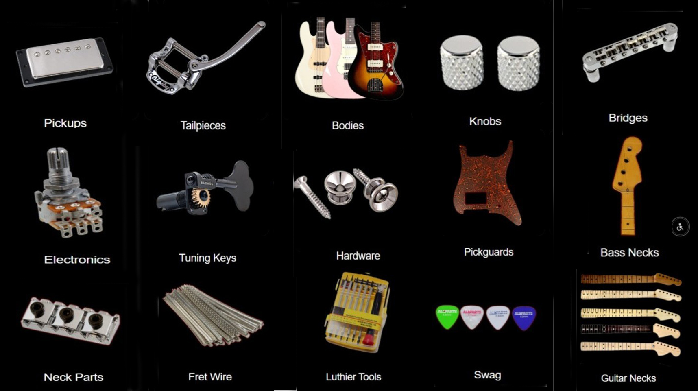
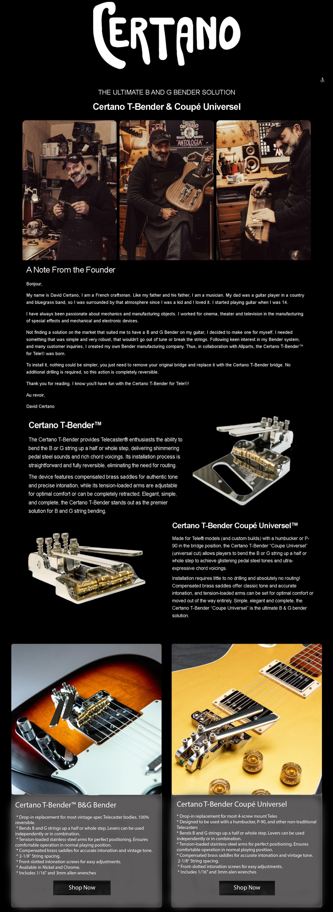
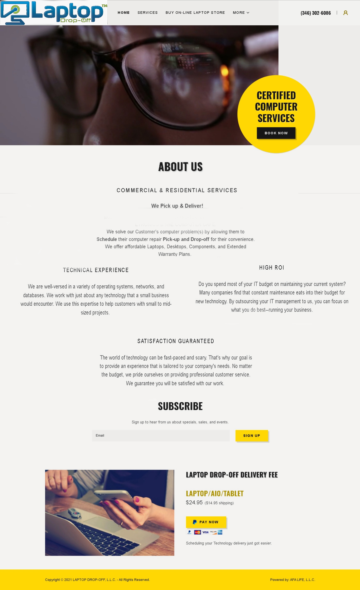

Before

After

This page showcases a selection of high-impact web redesigns, illustrating the transformative power of strategic development. By comparing "Before and After" states, these examples highlight how outdated, inaccessible, or cluttered interfaces can be reimagined into sleek, high-conversion digital experiences. Many of the legacy sites, featured below, suffered from critical design flaws, including non-responsive layouts, off-center elements, and inconsistent grid structures. My process involves a total architectural overhaul to ensure:
Beyond visual redesigns, the bottom of this page features comprehensive, ground-up builds and sophisticated platform migrations. A key highlight includes a seamless transition from Shopify to WordPress, where I hand-coded the environment to mirror the original design while drastically improving back-end flexibility and SEO performance.
These projects demonstrate a full-cycle development capability—from initial wireframing and UI/UX design to final deployment and launch. The result is a suite of employer-ready platforms that prioritize technical precision without sacrificing creative impact.








